плавание
100 км
- 2 000 бассейнов по 50 метров
- три переправы через Ла-Манш
- от Москвы до Ярославля без передышки в воде
Первый в мире 31-дневный ультратриатлон.
Фрагменты из фильма: дыхание, голос, вода, ритм и скорость.
01 · Дыхание Дыхание и шаги в момент предельной нагрузки.
02 · Голос Фрагмент речи из документального фильма «1111».
03 · Вода Вода бассейна и ритм гребка.
04 · Ритм Механический ритм длинной тренировки.
05 · Скорость Ветер и шум движения на скорости.
Дневник подготовки
После 60 дней базовой работы Виктор сверил ощущения с цифрами: газоанализ, лактат, мощность и пульс.
Следующий цикл — три месяца работы над силой и скоростью, затем повторный тест.
Читать запись в Telegram Откроется дневник Виктора в TelegramДневник, тренировки и сбор команды
Ежедневный ход дистанции
Фильм, результаты и архив
Цель проекта
11 111 км — не авантюра, а новый масштаб уже работающей формулы: предельная дистанция, честный герой и история, за которой хочется следить до конца.
Один проект · три дисциплины
31 день подряд. Числа здесь не декор — каждое можно перевести в знакомый человеку масштаб.
100 км
10 010 км
1 001 км
Итого за 31 день

О герое
47 лет. Не создаёт образ — живёт в нём.
Идеолог сообществ «Пыльные гантели» и «Гастродинамика», друг, мотиватор и один из сильнейших любителей в триатлоне.
История — не выдумка.
Это его жизнь.
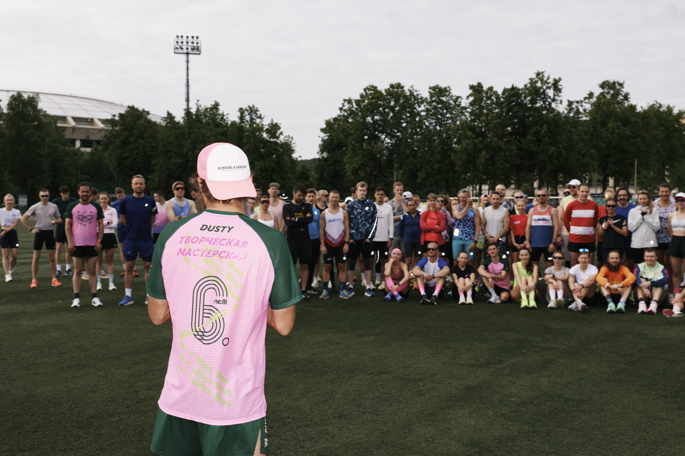
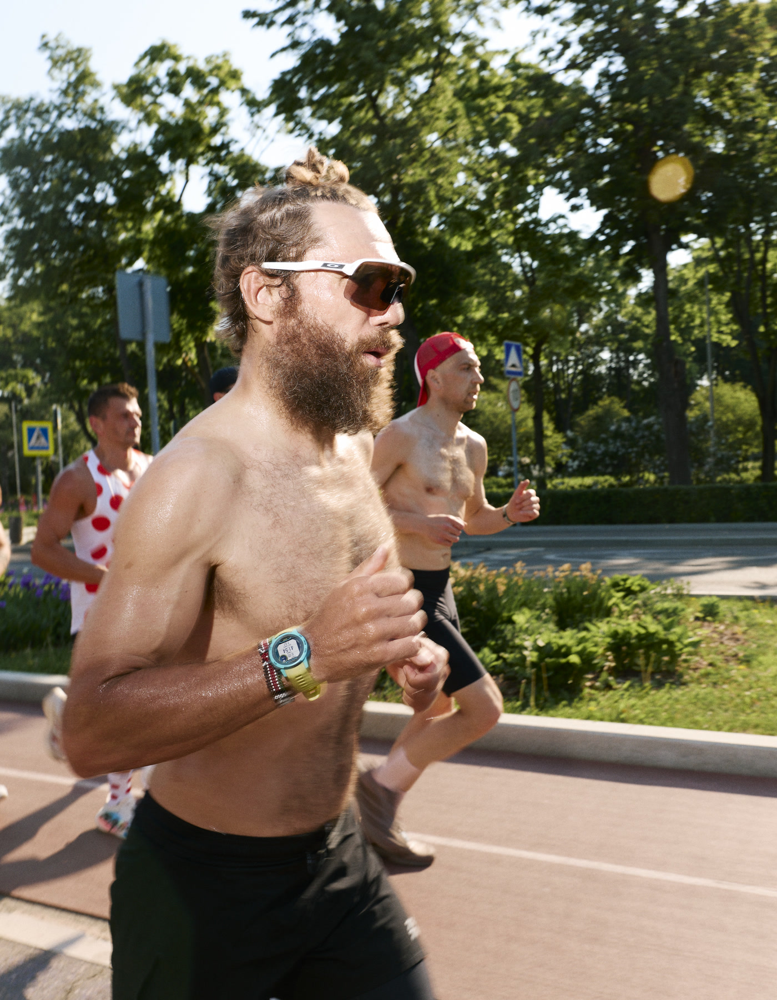
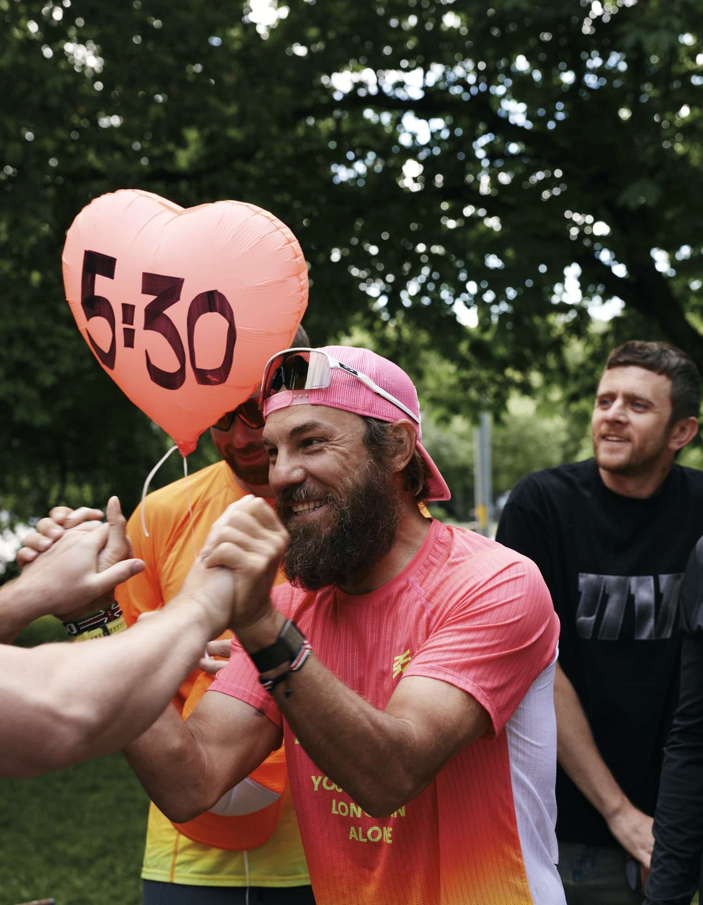
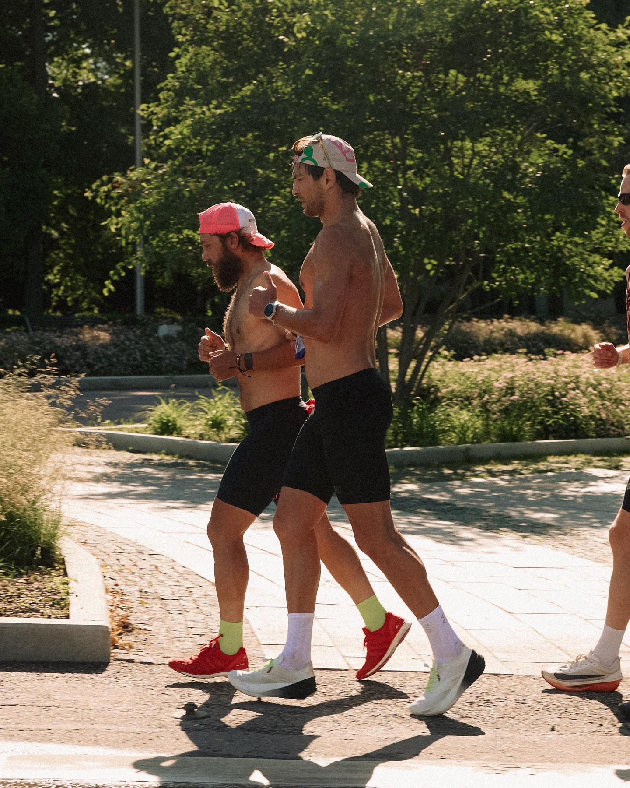
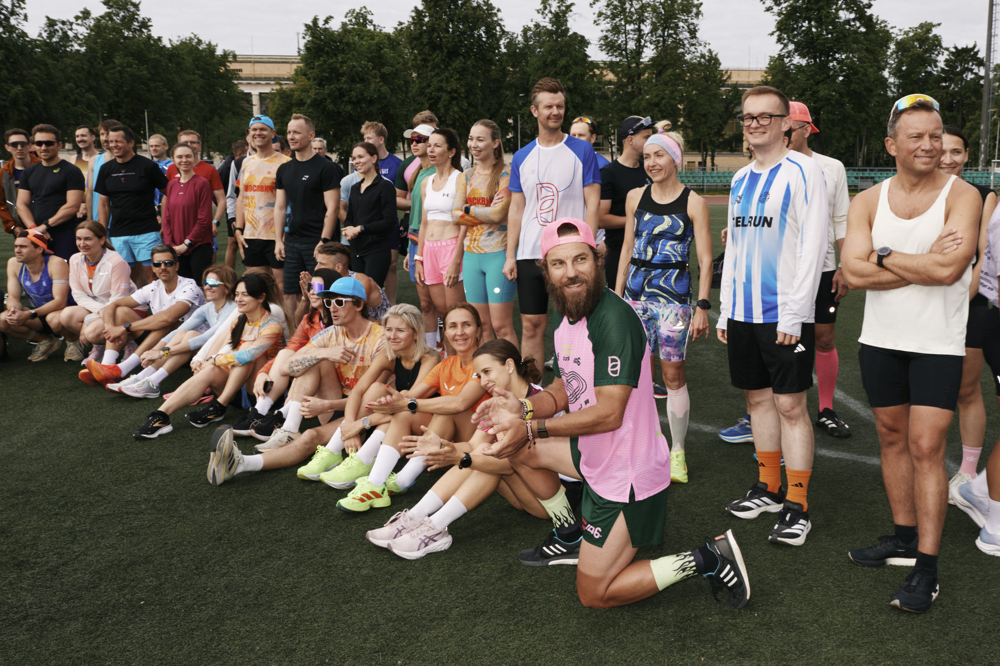
Фото — Женя Ханай 22 мая — 19 июня 2026
Мы уже делали это
Аудитория готова к длинным форматам. Честность работает лучше глянца. История продолжает жить после финиша.
Смотреть фильм о проекте «1111» Откроется ВКонтакте в новой вкладкеПять серий — 233, 239, 231, 231 и 273 тыс.; фильм — 92,1 тыс. Суммарно — около 1,299 млн просмотров.
Участие в чемпионатах мира Ironman и Marathon des Sables подтверждены описанием документального проекта.
Результаты коммуникационной кампании проекта «1111» по данным команды проекта.
Статус первой попытки 31-дневного ультратриатлона — утверждение команды проекта; независимая фиксация будет добавлена после старта.
Не первый предел
Интервью
Разговоры о триатлоне, беге, сообществах и больших дистанциях.
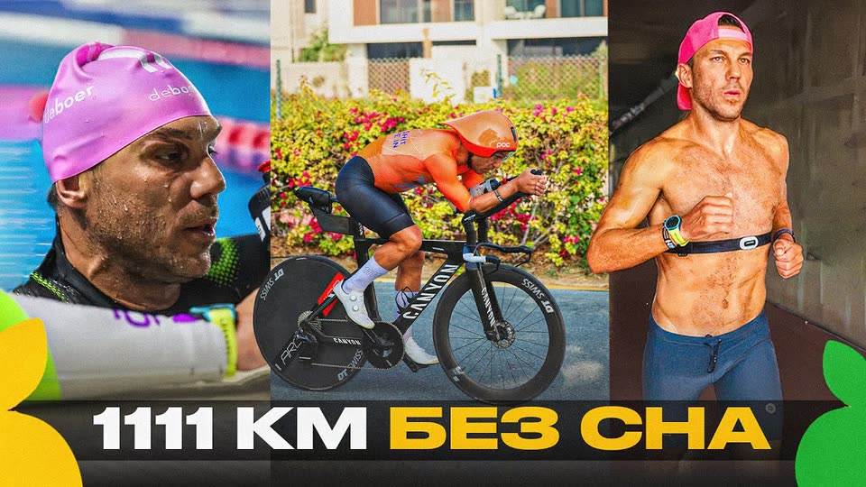
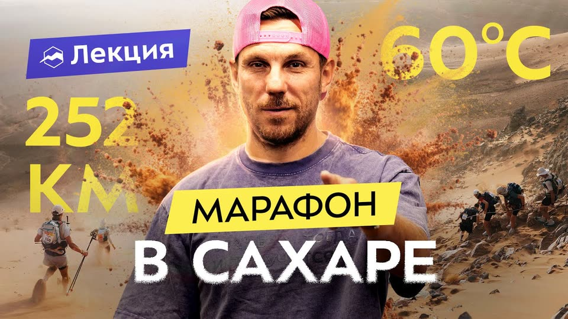
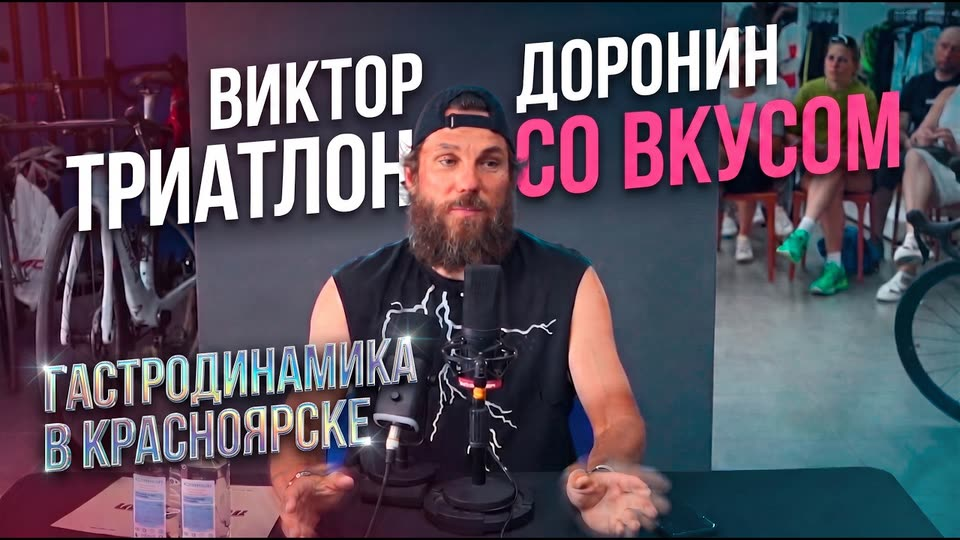
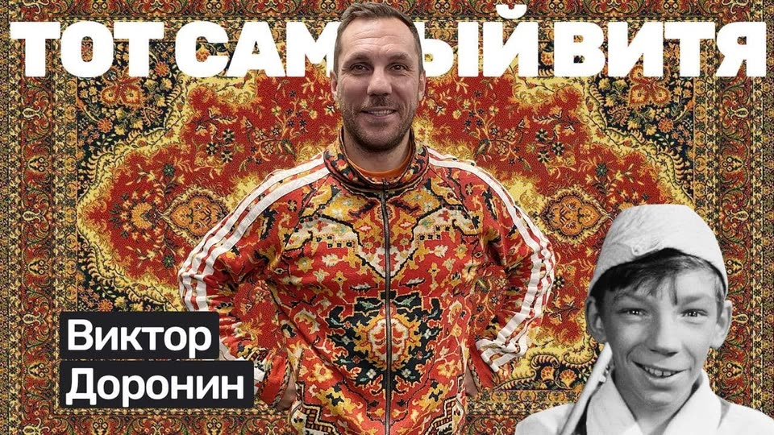
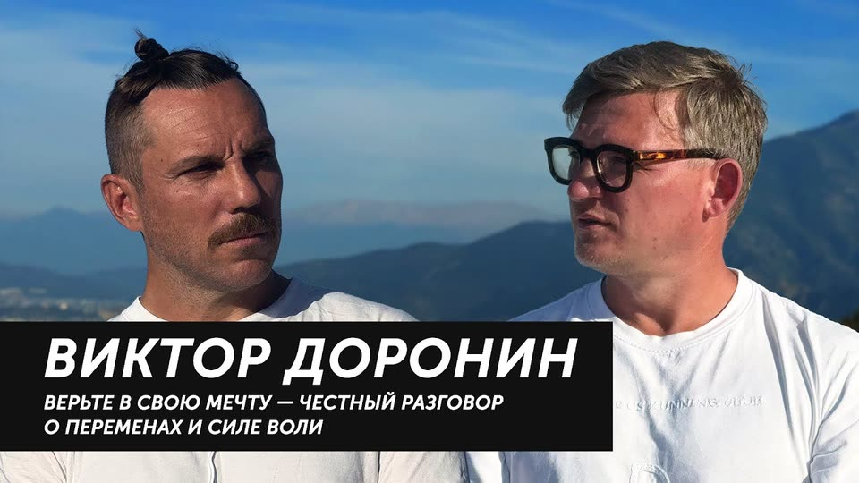
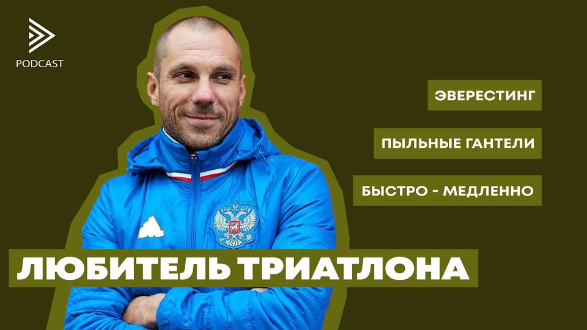
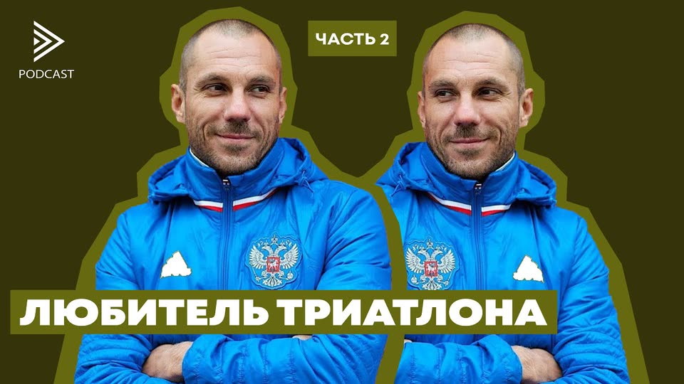
Партнёрам
Старт 1 декабря 2026
Не интеграция.
Общий путь.
11 111 км начинаются задолго до первого километра. Мы приглашаем тех, кто хочет не наблюдать со стороны, а пройти эту историю вместе с Виктором — до старта, все 31 день и после финиша.
Направления участия
Продукт становится частью ежедневной дистанции и честно показывается в работе.
Данные, связь и контроль помогают сделать 31 день понятными аудитории.
Совместно рассказываем историю до старта, во время проекта и после финиша.
Как начинается работа
Определяем, что партнёр хочет изменить и где это честно встречается с проектом.
Фиксируем формат, ресурсы, контент и измеримый результат.
Работаем до старта, все 31 день проекта и после финиша.
Опыт, который уже работает